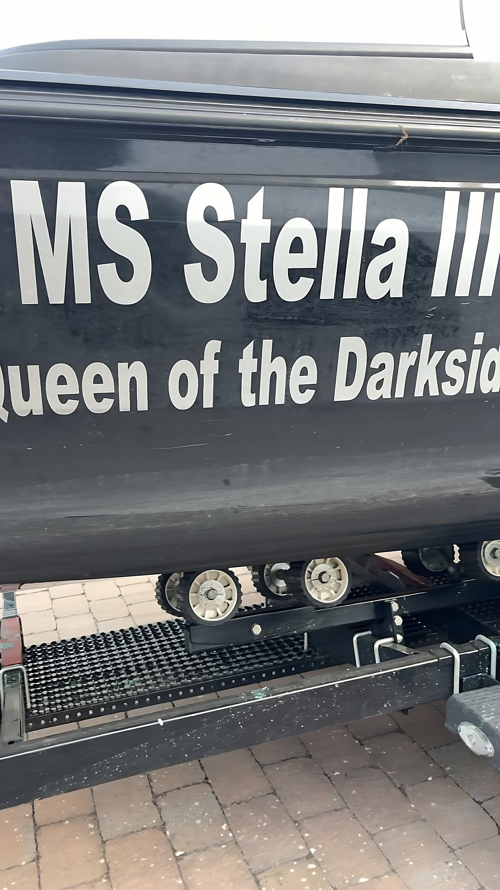
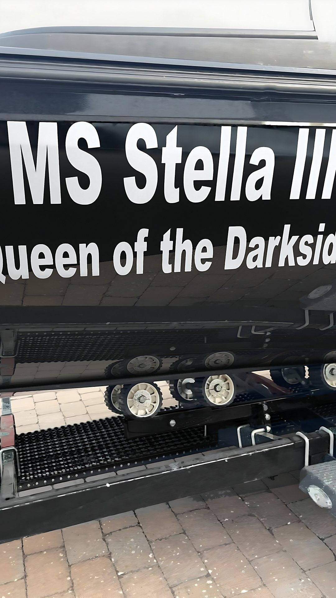
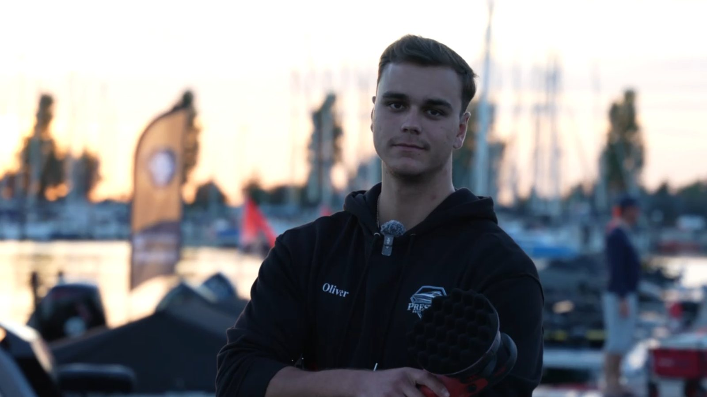
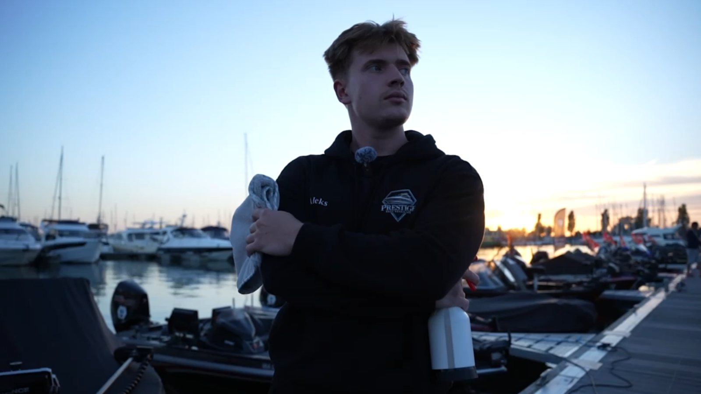

Außenreinigung
Schonende Handwäsche von Rumpf, Aufbau, Deck und Cockpit mit bootsgerechten Reinigern. Wir entfernen jeglichen Schmutz von der Gelcoat-Oberfläche und reinigen gründlich, ohne Material oder Beschläge anzugreifen.
Mobiler Detailing-Service für Boote und Yachten.
Unsere Arbeit
Echte Clips und Fotos von unseren Aufbereitungen.
Tippen Sie auf ein Motiv, um es groß anzusehen.
Leistungen
Schonende Handwäsche von Rumpf, Aufbau, Deck und Cockpit mit bootsgerechten Reinigern. Wir entfernen jeglichen Schmutz von der Gelcoat-Oberfläche und reinigen gründlich, ohne Material oder Beschläge anzugreifen.
Professionelle, mehrstufige Politur, angepasst an den Zustand Ihrer Oberfläche. Wir entfernen Kratzer, Macken und Oxidation. Das Ergebnis ist ein gleichmäßiger, tiefer Glanz mit klarer Spiegelung.
Langlebiger Schutz für Gelcoat und Lack nach der Politur. Die Keramikschicht schützt vor UV-Strahlung und Oxidation, sorgt für Abperleffekt und intensiven Glanz und macht die Reinigung deutlich leichter.
Gründliche Reinigung und Pflege des gesamten Innenraums: Edelstahl und Reling, Teakholz, Kunststoff, Leder und Polster, Textilien und Teppiche, Glasflächen sowie Sanitär- und Pantrybereich. Jedes Material wird passend behandelt.
Schutz des Unterwasserschiffs vor Algen, Muscheln und Seepocken. Wir reinigen den Rumpf, bereiten den Untergrund vor und tragen das Antifouling fachgerecht auf, abgestimmt auf Gewässer und Nutzung.
Vorher / Nachher
Derselbe Rumpf aus derselben Perspektive. Ziehen Sie den Regler und vergleichen Sie den Zustand vor und nach unserer Aufbereitung.


VorherNachherBewertungen
Echte Google-Bewertungen, 5 von 5 Sternen.
Ich habe mein Boot bei den Jungs zum polieren und versiegeln abgegeben. Das Gelcoat war nachher wieder am glänzen als wäre es neu, genauso der Außenborder. Außerdem arbeiten die Jungs mit Leidenschaft und der Preis war sehr fair.
Mein Boot war ziemlich verwittert, jetzt glänzt es wieder richtig. Auch kleine Details wurden nicht übersehen
Klare Empfehlung! Termin kurzfristig bekommen und das Ergebnis hat meine Erwartungen übertroffen.
Ich habe mein Boot den Jungs anvertraut. Das GFK und die Außenborder waren komplett verwittert und wurden auf Hochglanz …
Top zufrieden - hätte das selbst nie so hinbekommen. Boot sieht aus wie neu!
Klare Empfehlung! Termin kurzfristig bekommen und das Ergebnis hat meine Erwartungen übertroffen.
Ich habe mein Boot den Jungs anvertraut. Das GFK und die Außenborder waren komplett verwittert und wurden auf Hochglanz …
Top zufrieden - hätte das selbst nie so hinbekommen. Boot sieht aus wie neu!
Ich habe mein Boot bei den Jungs zum polieren und versiegeln abgegeben. Das Gelcoat war nachher wieder am glänzen als wäre es neu, genauso der Außenborder. Außerdem arbeiten die Jungs mit Leidenschaft und der Preis war sehr fair.
Mein Boot war ziemlich verwittert, jetzt glänzt es wieder richtig. Auch kleine Details wurden nicht übersehen
Top zufrieden - hätte das selbst nie so hinbekommen. Boot sieht aus wie neu!
Ich habe mein Boot bei den Jungs zum polieren und versiegeln abgegeben. Das Gelcoat war nachher wieder am glänzen als wäre es neu, genauso der Außenborder. Außerdem arbeiten die Jungs mit Leidenschaft und der Preis war sehr fair.
Mein Boot war ziemlich verwittert, jetzt glänzt es wieder richtig. Auch kleine Details wurden nicht übersehen
Klare Empfehlung! Termin kurzfristig bekommen und das Ergebnis hat meine Erwartungen übertroffen.
Ich habe mein Boot den Jungs anvertraut. Das GFK und die Außenborder waren komplett verwittert und wurden auf Hochglanz …
Über uns
Hinter Prestige stehen wir beide. Wir betreuen jedes Boot persönlich – von der ersten Beratung bis zum Finish.



Kontakt
Rufen Sie an, schreiben Sie uns oder nutzen Sie das Formular.
Füllen Sie das Formular aus, wir melden uns persönlich bei Ihnen.